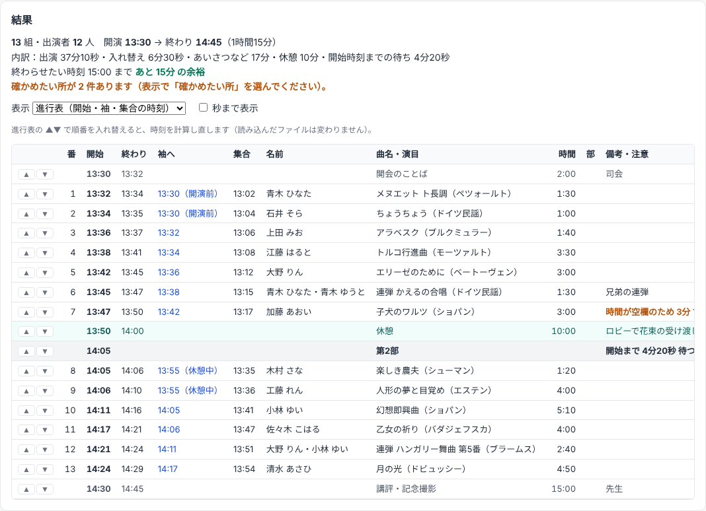

発表会のプログラムと時刻表
ピアノ・バレエ・ダンス・吹奏楽・合唱などの発表会で、出演者・曲名・演奏の時間の一覧から、1組ごとの開始時刻、舞台袖へ入る時刻、控室に集まる時刻を計算し、何時に終わるかを確かめるツールです。順番を入れ替えると、時刻をすぐに計算し直します。
- 進行表：番号・開始・終わり・袖へ・集合・名前・曲名・時間を1枚に（係用）
- プログラム：お客さま向けの曲目の一覧（開始時刻を載せる・載せないを選べます）
- 呼び出し表：「13:34 袖へ 4番 江藤さん」のように、時刻の順に並べた呼び出しの一覧（済の欄つき）
- 1人1枚の出番のお知らせ：集合の時刻・袖へ入る時刻・開始の予定を、A4 に8人分（連弾などで2回出る人は1枚にまとめます）
ソフトのインストールは不要で、いつものブラウザで動きます。
500円（税込・買い切り）
お試し版はすべての機能を使えて、時刻を計算するのは表の先頭10組までです。決済が終わると、そのまま製品版の画面に移動します。ブックマークしておけば何度でも使えます。

見本のデータ（架空の名前）で作った例です。
こんなときに
- 出演順と演奏時間を電卓で足して、1組ずつ開始時刻を手で書いている。順番を1つ入れ替えるたびに、後ろの時刻を全部書き直している
- 会場を借りている時間に収まるか、休憩を何分にできるかを、プログラムを作る前に確かめたい
- 連弾・合奏で2回出る子の出番が近すぎないか、着替えや楽器の準備が間に合うかを確かめたい
- 当日、舞台袖へ呼ぶ係のために、時刻順の呼び出し表を作りたい。保護者に、集合の時刻と出番の時刻を1人ずつ知らせたい
できること
- 読める表：出演者・曲名・時間の列があれば使えます。順番・作曲者・開始時刻・部・備考の列は任意です。見出しの名前から列を推定し、違っていれば選び直せます
- 時間の書き方：「3」（分）「3分30秒」「3:30」（分:秒）「3.5」「210秒」「約4分」。空欄の行は、決めた長さ（初期値3分）で計算して印を付けます
- 休憩・あいさつ・部の見出し：「休憩」の行は休憩、名前のない「開会のことば」「講評」は進行の項目、「第2部」の行は見出しとして扱います。休憩の前後には入れ替えの時間を足しません
- 開始時刻の指定：「第2部は14:05から」のように開始時刻の列があれば、その時刻まで待ちます。前が押して間に合わないときは知らせます
- 呼び出し：舞台袖へ入る時刻を「出番の○分前」か「○組前（前の組が始まるとき）」で、控室への集合を「出番の○分前」で決められます。休憩をはさむ組は、休憩が終わる5分前に呼び出します
- 連弾・合奏：「青木・田中」のように「・」「、」「&」でつないだ名前は1人ずつに分けて、1人ごとの出番をまとめます（分けない設定もできます）
- 確かめたい所：同じ人の出番のあいだが決めた組数より短い所、開始時刻に間に合わない所、時間が空欄・読めない行、終わらせたい時刻を過ぎるとき
- 順番の入れ替え：画面の ▲▼ で順番を動かすと、全部の時刻を計算し直します
- 印刷と保存：プログラム・進行表・呼び出し表・1人1枚のお知らせ（A4）。Excel ファイル（.xlsx）には進行表・呼び出し表・1人ごと・確かめたい所のシートが入ります。CSV でも保存できます
- CSV（UTF-8・Shift_JIS）と Excel ファイル（.xlsx）を読めます。Excel の表をコピーして貼り付けても使えます
できないこと（購入前にご確認ください）
- 出演順を自動で決めることはしません（並べた順に計算します。順番の列があれば番号の順に並べます）
- 出演の申し込みを受け付けたり、出演者へ連絡を送ったりする機能はありません
- 演奏の長さは表に書いた値で計算します。曲の長さを調べる機能はありません。実際の進行は前後するため、余裕を見て決めてください
- リハーサルの割り当てや、ステージの照明・音響の進行表には対応していません
- 同じ名前の別の人は1人として数えます
- スマートフォンでは操作しにくいため、パソコンでお使いください
Excel だけで計算するなら
B1 に開演の時刻（13:30）、B2 に入れ替えの秒数、5行目から A 列に名前・B 列に演奏の分数（3分30秒なら 3.5）を入れたとき、C 列の開始時刻は
C5：=$B$1 C6：=C5+B5/1440+$B$2/86400（下へコピー）
で出せます。舞台袖へ入る時刻（10分前）は =C5-10/1440 です（表計算ソフトで確かめました。セルの表示形式を時刻にしてください）。
ただし、休憩の前後だけ入れ替えを足さない、第2部の開始時刻まで待つ、「2組前」で呼び出す、連弾で2回出る人の出番をまとめる、といったことは式が込み入り、順番を入れ替えるたびに式も直すことになります。
このツールが向いているのは、組数が多い、休憩や第2部がある、順番を何度も組み直す、呼び出し表や1人ずつのお知らせも作りたい、といったときです。
よくある質問
| データはどこかに送られますか？ | 送られません。読み込み・計算・印刷・保存はすべてお使いのブラウザの中で行います。開演の時刻などの設定と表題だけをブラウザに保存し、名前や曲名は保存しません。 |
|---|---|
| 「3:30」は3時間30分になりませんか？ | 演奏の時間の欄の「3:30」は3分30秒として読みます。「0:03:30」も3分30秒です。1時間を超えるときは「1時間10分」と書いてください。 |
| 時刻の秒はどう表示しますか？ | 開始時刻は分未満を切り捨てて表示します（13:34:30 は 13:34）。「秒まで表示」を選ぶと秒も出します。 |
| 何組まで使えますか？ | 製品版は組数の制限はありません（2,000組の一覧を0.1秒かからずに計算できることを確かめています）。 |
安心してお使いいただくために
- 表はお使いのブラウザの中だけで処理し、サーバーには送信しません
- 動作環境：最新版の Chrome・Safari・Edge・Firefox（パソコン）
- 説明どおりに動かない場合は、ご購入から7日以内にご連絡いただければ返金します
総当たりの試合の順番を作るなら 総当たりの対戦表づくり、名札を印刷するなら 名札の印刷、教室の振替を数えるなら 振替レッスンの残り回数 もあります。